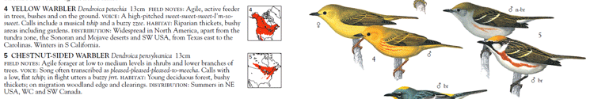
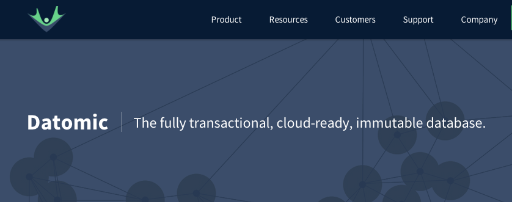
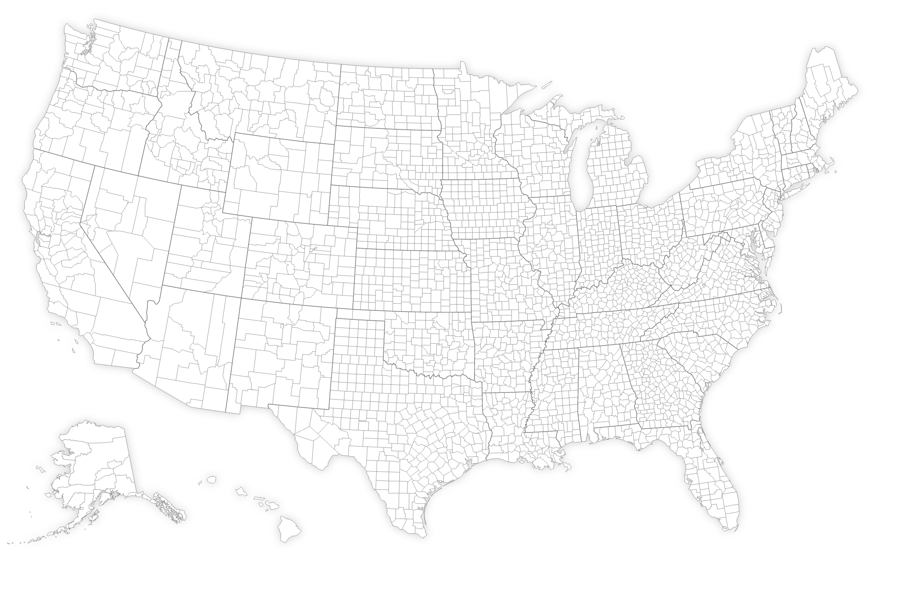
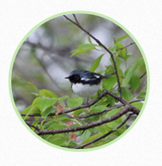
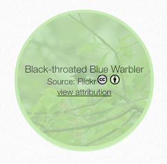
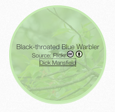

A Bird's Eye View of ClojureScript
Chandu Tennety
{:github "tennety" :twitter "tennety"}
John Andrews
{:github "jxa" :twitter "xandrews"}
Motivation
Motivation

Yellow Warbler
Chestnut-sided Wabler
Demo
Data for the App
eBird data set
- Data for 1 year for the US region
- 11 GB of tab-separated values
- Over 1700 species
Data for the App
The need for an API
- Safe, quick data import
- Too much data to load at once
- Dynamic nature of the app
- d3 handles JSON requests
Parsing the Data
Clojure Syntax
Parsing the Data
;; Clojure
(def fields
[:sighting/guid ;; "GLOBAL UNIQUE IDENTIFIER"
:taxon/order ;; "TAXONOMIC ORDER"
nil ;; "CATEGORY"
:taxon/common-name ;; "COMMON NAME"
:taxon/scientific-name ;; "SCIENTIFIC NAME"
:taxon/subspecies-common-name ;; "SUBSPECIES COMMON NAME"
:taxon/subspecies-scientific-name;; "SUBSPECIES SCIENTIFIC NAME"
:sighting/count ;; "OBSERVATION COUNT" ;; x indicates uncounted
;; ...
])
Parsing the Data
;; Clojure
(defn sighting-seq
"Return a lazy sequence of lines from filename, transformed into sighting maps"
[filename skip-rows nth-row]
(->> (io/reader filename)
(line-seq)
(drop (or skip-rows 1))
(take-nth nth-row)
(map sighting)))
Data Storage and Querying
Datomic
Datomic
- Schema
- Transactional
- History preserving
- Query language is Clojure data
- Results are Clojure data structures
- Query is executed in application server
Datomic
;; clojure
(q '[:find (sum ?count) (count ?e)
:where
[?t :taxon/order "2881"]
[?e :sighting/taxon ?t]
[?e :sighting/state "Ohio"]
[?e :sighting/county "Sandusky"]
[?e :sighting/count ?count]]
(db conn))
;;=> [[540 108]]
Web Service
Pedestal
- Powerful middleware system
- Routing
- HTML Templating
Progress
Displaying the Data
Displaying the Data
Got ClojureScript?
Immediate wins:
- Easy to integrate into the existing stack
- Same language on both client and server
- Interoperability with JavaScript
What is ClojureScript?
Well, what is it, precious?

What is ClojureScript?
- Compiler for Clojure to JavaScript
- Emits JS optimized for the Google Closure library
- Several benefits over vanilla JS
- Persistent data structures
- Object keys as opposed to only strings
- Laziness
- Macros
- Function argument destructuring
ClojureScript and JavaScript Interop
Methods
// JavaScript
var activeState = function() {
return d3.select(".active");
}
;; ClojureScript
(defn active-state [] (.select js/d3 ".active"))
ClojureScript and JavaScript Interop
Properties
// JavaScript
var target = function() {
return d3.event.target;
}
;; ClojureScript
(defn target [] (.-target (.-event js/d3)))
;; OR
(defn target [] (.. js/d3 -event -target)
ClojureScript and JavaScript Interop
Fluent APIs and the -> Macro
// JavaScript
var months = d3.time.scale
.domain([new Date(2012,10,15), new Date(2013,10,15)])
.range([0, 900])
;; ClojureScript
(def months ( -> (js/d3.time.scale)
(.domain (array (js/Date. 2012 10 15) (js/Date. 2013 10 15)))
(.range (array 0 900))))
Progress
We Have a Prototype! But...
- Unpolished UI
- No structure to the data
- The database query was slow
- Differing views of end result
React and Om
Imagination Land

An Om Component
Initial Render
Remember: Imagination Land
;; ClojureScript
(ul {:className "species-list"}
(li {:className "species"} (a {:href "#/taxon/1"} "Abert's Towhee"))
(li {:className "species"} (a {:href "#/taxon/2"} "Acadian Flycatcher"))
(li {:className "species"} (a {:href "#/taxon/3"} "Acorn Woodpecker"))
... )
Building the List
;; ClojureScript
(defn species-li [species]
(li {:className "species"}
(a {:href (path species)} (:common-name species))))
(map species-li all-species)
Interactivity
;; ClojureScript
(map species-li
(filter (match-string "black-thr") species))
Putting It Together
;; ClojureScript
(defn filter-list-items [filter-text species]
(ul {:className "species-list"}
(map species-li
(filter (match-string filter-text) species))))
We Don't Live in Imagination Land
- Replacing entire swaths of dom is slow
- No data structures
- Nobody does this in real life
React: A Better DOM
- Render the dom you want
- React takes care of the details
- Keeps real DOM in sync with your ideal DOM
Om
- Builds upon react
- Leverages immutability
Om Example
;; ClojureScript
(defn selection-name [name owner]
(om/component
(dom/h2 #js {:className "selection-name"} name)))
Handling Events In Om
;; ClojureScript
(defn date-minus [model owner]
(om/component
(dom/span #js {:id "date-minus"
:onClick #(update-month! model owner dec)}
"-")))
Brainsplosion
Integrating With Flickr
  Integrating With Flickr
;; ClojureScript
(ns bird-wave.flickr (:require [cemerick.url :refer (url)]))
(def api-base-url (url "https://api.flickr.com/services/rest/"))
;;#cemerick.url.URL{:protocol "http", :username nil, :password nil, :host "google.com", :port -1, :path "", :query nil, :anchor nil}
(str (assoc api-base-url :query {:api_key "my_super_flickr_key"}))
;; https://api.flickr.com/services/rest/?api_key=my_super_flickr_key
Integrating With Flickr
Updating the Model
;; ClojureScript
(js/d3.json search-url (fn [data]
(om/update! model :photo (first-photo data))))
;; { "photos": { "page": 1, "pages": "223", "perpage": 1, "total": "223",
;; "photo": [
;; { "id": "4769690133", "owner": "31064702@N05", "secret": "818406d0cd", "server": "4123", "farm": 5, "title": "Eastern Kingbird", "ispublic": 1, "isfriend": 0, "isfamily": 0, "ownername": "Dawn Huczek", "url_q": "https:\/\/farm5.staticflickr.com\/4123\/4769690133_818406d0cd_q.jpg", "height_q": "150", "width_q": "150" }
;; ] }, "stat": "ok" }
(js/d3.json url (fn [data]
(om/update! model :attribution (attribution data))))
;; { "photo": { "id": "4769690133", "secret": "818406d0cd", "server": "4123", "farm": 5, "dateuploaded": "1278473496", "isfavorite": 0, "license": 4, "safety_level": 0, "rotation": 0, "originalsecret": "d7072dbb9a", "originalformat": "jpg",
;; "owner": { "nsid": "31064702@N05", "username": "Dawn Huczek", "realname": "", "location": "USA", "iconserver": "2915", "iconfarm": 3, "path_alias": "" },
;; ...
;; "urls": {
;; "url": [
;; { "type": "photopage", "_content": "https:\/\/www.flickr.com\/photos\/31064702@N05\/4769690133\/" }
;; ] }, "media": "photo" }, "stat": "ok" }
Integrating With Flickr
The Selection Image Component
;; ClojureScript
(dom/div #js {:id "selection-image"
:className (if (seq model) "loaded" "no-photo")}
(dom/img #js {:className "photo"
:src (try-with-default model :url_q "/images/loading.png")})
(dom/div #js {:className "attribution"}
(dom/h3 #js {:className "title"}
(try-with-default model :title "No photo available"))
(dom/div #js {:className "by"}
…
(if (seq (:attribution model))
(dom/a #js {:className "detail fetched"
:href (get-in model [:attribution :url])
:target "_blank"}
(get-in model [:attribution :by]))
(dom/a #js {:className "detail"
:href "#"
:onClick #(fetch-attribution % model)}
"view attribution")))))
Progress
Making the App Responsive
Full-stack changes
Lessons and Insights
Lessons and Insights
Immutability is good!
- Om is more efficient than React ootb
- Avoids lots of potential JS bugs
Lessons and Insights
ClojureScript has come a long way
- Debugging with source maps
- JS interop is painless
- The build process is automated